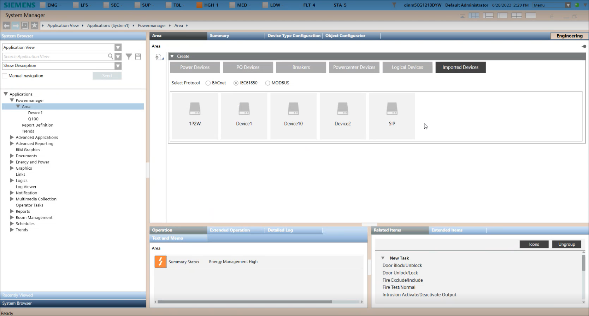
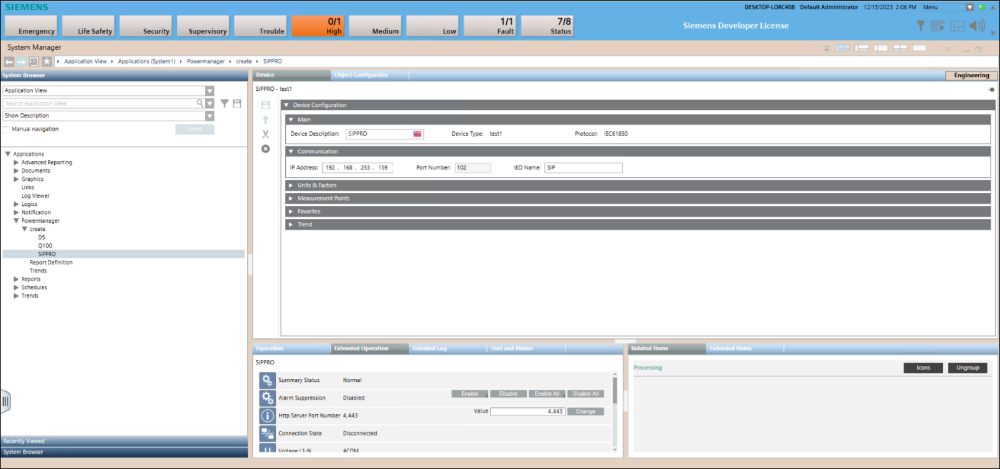

Creating Device
- In System Browser, select Application View > Powermanager > Area > Create Device
 .
. - Navigate to Imported devices section and select IEC 61850 protocol.
- Select the required IEC 61850 device type.

- Navigate to Create > Communication and enter the IP Address and IED name.
- Navigate to Extended Operation tab and enter the http Server Port Number.
- Configure parameters for Units & Factors, Measurement Points, Favorites and Trends expanders.
- Click Save
 .
. - Enter the Name of the device.
Note: You cannot have duplicate device name. - Click OK.
- The device is created successfully.
